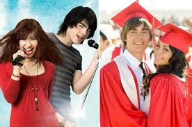
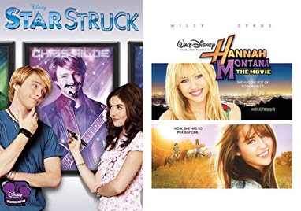
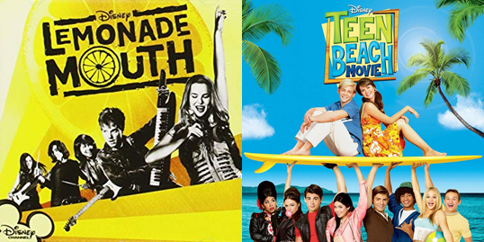
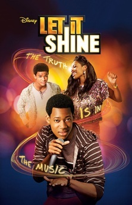
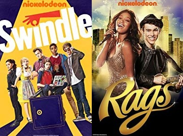

Filmes originais Disney Channel e Nick marcaram muito nossas infâncias, bem...
talvez Nick nem tanto, mas quem que nasceu no início dos anos 2000 ou final dos 90 não conhece High
School Musical? Contudo, pessoas como nós sabem que HSM não é nem um décimo do que os originais da
nossa infância têm a oferecer. Vamos conferir aqui alguns desses filmes.
Filmes Disney Channel

É claro que tínhamos que começar com os clássicos. Se você assistia a High School Musical e a Camp Rock,
sua infância foi muito feliz (e muito musical também). Não é exagero falar que esses dois filmes foram essenciais
para toda uma era Disney. HSM, em particular, fez tanto sucesso que a estréia do terceiro filme foi nas telonas e
seu sucesso não foi atoa (embora convenhamos que o segundo filme tenha deixado a desejar). É sem, dúvidas o musical
queridinho da Disney. (E cá entre nós: Quem não se apaixonou pelo Troy quando criança?). Camp Rock não fica para trás
não. Com a deusa Demi Lovato e os lindos Jonas Brothers (QUE ESTÃO DE VOLTA!!!), o filmenos conquistou fácil fácil também.
Eu não sei vocês, mas eu lembro as letras de This is Me até hoje.

Outros dois musicais, desta vez com um foco na vida artística. Starstruck também é um clássico, mesmo que menos queridinho.
Até hoje, Jessica e Christopher são um dos meus casais favoritos da Disney, mas convenhamos que Christopher não é nome de astro pop.
Hannah Montana: O Filme tem uma temática até bem parecida com Starstruck. Foi nesse filme que a diva Miley Cyrus nos deu The Climb, que
me passou lições de vida que uso até hoje, e também foi a primeira vez que a vimos tirar a peruca. Eu estou falando que nem blogueira e isso
me enche o saco, mas estou sem criatividade para outra coisa.

Esses dois já são do final da boa era Disney, mas não quer dizer que ficam para trás. Lemonade Mouth é, particularmente falando, o meu favorito
de todos aqui. À propósito, nele atuou Naomi Scott, como Mo, e hoje está linda e maravilhosa como Jasmine no novo live-action de Aladdin. As músicas
são simplesmente perfeitas e eu as escuto até hoje. Teen Beach Movie foi, na minha opinião, o último filme bom da Disney e possui a temática mais
diferenciada de todos já citados (não que conhecer e se apaixonar por um ídolo adolescente durante as férias seja algo normal, mas com certeza é mais
normal que ir para dentro do seu filme favorito enquanto surfa).

AGORA SIM! Esse, sem dúvidas, é o filme mais esquecido da Disney Channel. E não deveria. Let It Shine é um outro filme sobre música e carreira
artística. O protagonista é ninguém menos que o Chris de Todo Mundo Odeia o Chris. Ele tem uma das melhores trilhas sonoras de todos que falamos,
além de ser um pouquíssimos filmes com protagonistas negros. Ele é um ótimo filme e não deveria ser menosprezado.
Filmes Nickelodeon

A Nick pode ter menos filmes originais, mas não quer dizer que não se compare em qualidade. O primeiro que vamos falar é Swindle, o primeiro nada
relacionado à música. É também o único com uma pegada mais de ação (não ação ação, mas você me entendeu). Com o foco em uma caça por uma figurinha
rara, Swindle é um filme de comédia que reúne um elenco de queridinhos da Nick, como Gibby e Sam de iCarly e a linda e maravilhosa Ariana
Grande.
O segundo também não é musical. Best Player pode não ser um filme que muitos conhecem, mas também é muito bom. Nele temos a icônica dupla Jerry Trainor
e Janette McCurdy (Spencer e Sam de iCarly). O filme é sobre dois jogadores que vão disputar um grande campeonato de videogame e as façanhas de Quincy (Jerry)
para tentar tirar Chris (Jannete) do jogo. É um filme bem engraçado (mas juntou Spencer e Sam, né? Queria o quê?) e com algumas cenas bem icônicas
(como a do frango). De todo modo, é um filme bom.
O terceiro e último filme da Nick do qual falaremos é o um dos melhores de todos da lista. Rags é um conto de Cinderela moderna, só que, no caso,
os gêneros são invertidos e todos personagens são musicais. A Cinderela é Charlie, um garoto que sonha em virar um cantor famoso, o príncipe é uma
artista famosa, a fada madrinha é um produtor na gravadora do "príncipe" e por aí vai. As músicas são muito boas e o elenco, que inclui o Beck de
Brilhante Vitória e o Drake de Drake e Josh, também.